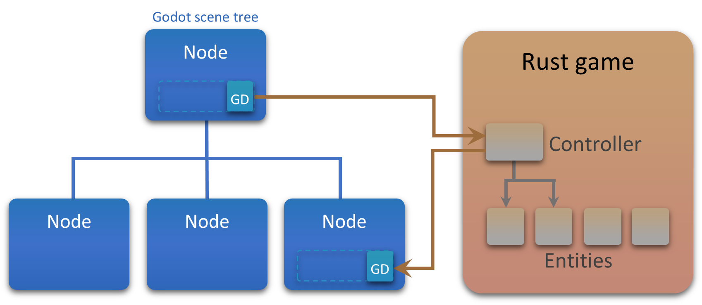

Belajar Membuat Game dengan
Godot Engine
Pelajari dasar game development dari nol. Kembangkan ide kreatifmu menjadi game 2D dan 3D interaktif yang menakjubkan.
Pengenalan
Apa Itu Godot Engine?
Godot Engine adalah perangkat lunak open-source dan gratis yang digunakan untuk membuat game 2D maupun 3D. Godot sangat disukai oleh indie developer karena ringan, memiliki sistem desain yang unik, dan bahasa pemrograman yang mudah dipelajari (GDScript).
-
100% Gratis & Open Source
Tidak ada royalti, tidak ada biaya langganan. Game yang Anda buat sepenuhnya milik Anda.
-
Sistem Node & Scene
Arsitektur inovatif yang membuat pengorganisasian elemen game menjadi sangat modular dan rapi.
-
Cocok Untuk Pemula
Dilengkapi dengan GDScript, bahasa mirip Python yang sangat mudah dipahami oleh pemula.

Workspace
Pengenalan Interface
Kenali ruang kerjamu sebelum mulai membuat keajaiban.
Scene Tree
Daftar semua elemen (Node) yang ada di layar saat ini. Strukturnya mirip seperti silsilah keluarga (parent-child).
Node
Blok pembangun dasar di Godot. Bisa berupa gambar, suara, kamera, atau kotak tabrakan (collider).
Inspector
Tempat untuk mengubah properti Node yang dipilih, seperti posisi, warna, ukuran, atau variabel dari script.
FileSystem
Penjelajah file project Anda. Menyimpan aset gambar, suara, script, dan file scene (.tscn).
Viewport
Area kanvas visual di tengah layar tempat Anda meletakkan dan mendesain level atau UI game.
Script Editor
Editor teks bawaan untuk menulis kode (GDScript). Dilengkapi autocompletion dan debugger.
Konsep Inti
Dasar Pembuatan Game
Game Loop
Siklus update 60 frame per detik
Movement
Manipulasi koordinat X dan Y
Collision
Deteksi tabrakan antar objek
Physics
Gravitasi, massa, dan kecepatan
Alur Belajar yang Disarankan
Coding
Belajar GDScript
GDScript adalah bahasa pemrograman tingkat tinggi bawaan Godot. Sintaksisnya terinspirasi dari Python, sehingga sangat bersih, menggunakan indentasi (tab), dan tidak memerlukan titik koma di akhir baris.
extends CharacterBody2D
# Kecepatan karakter
var speed = 200
func _physics_process(delta):
# Deteksi tombol kanan keyboard
if Input.is_action_pressed("ui_right"):
position.x += speed * delta
if Input.is_action_pressed("ui_left"):
position.x -= speed * delta
move_and_slide()Step-by-Step
Membuat Game Pertama
Setup Project
Buat project baru di Godot. Tambahkan root node `Node2D` dan simpan scene sebagai `main.tscn`.
Buat Player
Tambahkan `CharacterBody2D`, masukkan gambar (`Sprite2D`), dan bentuk tabrakan (`CollisionShape2D`).
Program Gerakan
Tambahkan script pada player. Gunakan GDScript untuk menangkap input keyboard dan mengubah posisi X/Y.
Rintangan & Skor
Gunakan `Area2D` untuk koin atau musuh. Hubungkan sinyal `body_entered` ke script untuk menambah skor atau Game Over.
Inspirasi
Genre Game Populer
Anda bisa membuat hampir semua jenis game dengan Godot.
Platformer 2D
Lompat, lari, kumpulkan koin layaknya game klasik retro.
Top-Down RPG
Jelajahi dunia, bicara dengan NPC, dan sistem inventory.
FPS / Shooter 3D
Gunakan sistem 3D node Godot untuk membuat game aksi cepat.
FAQ
Pertanyaan yang sering ditanyakan pemula.